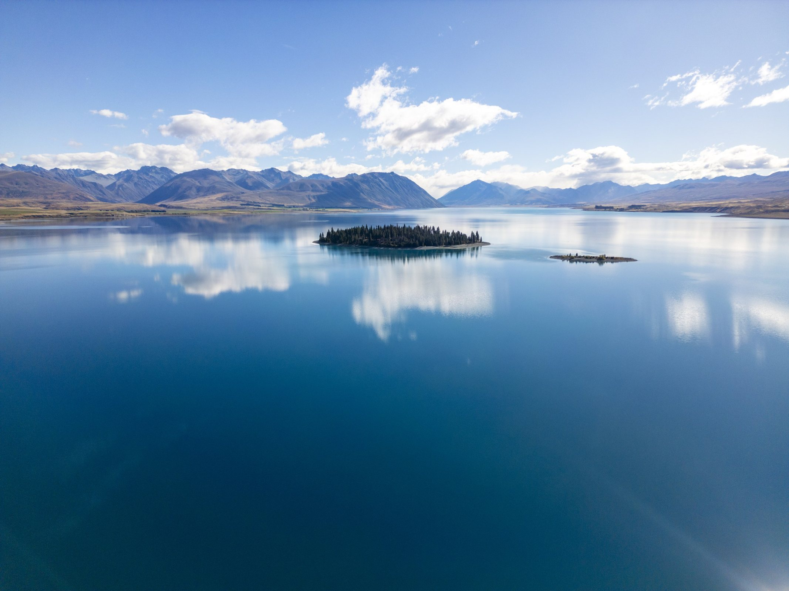
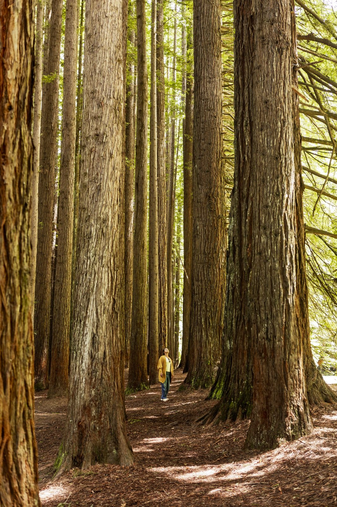
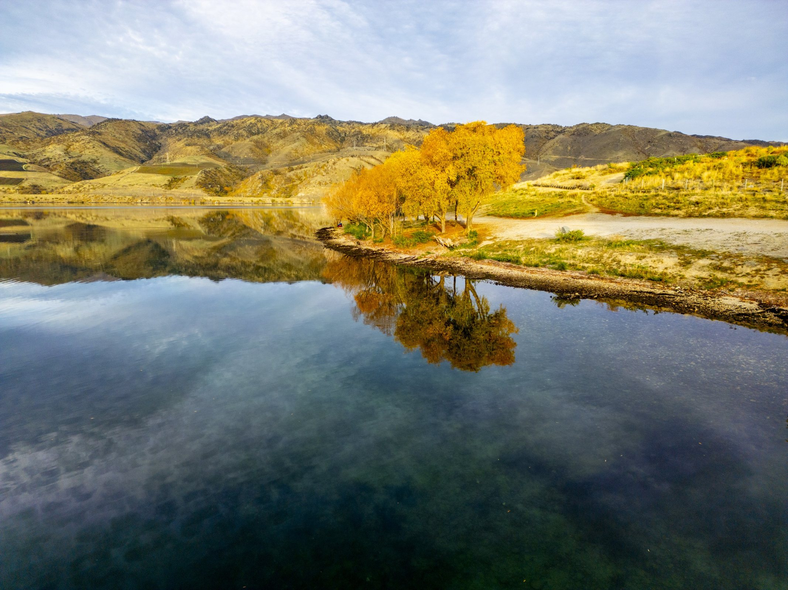
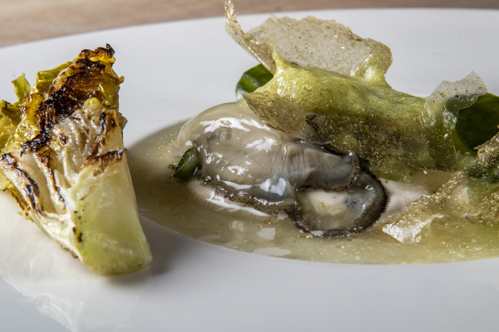
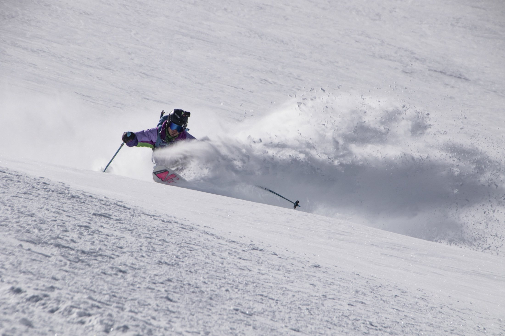

Discover more
Give travellers a reason to explore beyond the most familiar highlights.

New photography and film for the places, people and experiences that make Finland memorable.
Explore the proposal ↘Lakes, forests, sauna and food are more than attractions. They are experiences shaped by the people who live there.
I propose a new photography and film production in Finland, developed with your team and local collaborators to show what a journey feels like in different regions and seasons.
Use the visual material to build your own campaigns, or work with us on the concept and production of a complete campaign.
Give travellers a reason to explore beyond the most familiar highlights.
Capture sauna, food, outdoor activities and the warmth of local hospitality.
Create material for destination campaigns, web, editorial and social channels.
Choose a region to explore a starting idea. The locations, experiences and people would be chosen together with your team.
Follow the changing light through northern nature, guided outdoor experiences and the people who welcome visitors across the seasons.
STORY ELEMENTSARCTIC NATURE · LOCAL GUIDES · SEASONAL EXPERIENCES
These are creative suggestions, not published Visit Finland briefs.
Images from my existing portfolio, showing my approach to landscape, atmosphere and detail. They are not presented as photographs taken in Finland.




From a fresh visual library to a complete campaign, we shape the production together.
New material produced in Finland for Visit Finland’s marketing, press, web and social channels.
Creative concept, production and final content developed with your team when needed.
Guides, producers, hosts and communities help us tell stories rooted in the place.
Production time, deliverables and usage are agreed according to the brief.
I’m Juan Aizpuru, a photographer and filmmaker focused on travel, people and outdoor experiences.
I lived in Switzerland for ten years and developed a close connection with mountain culture and outdoor sports. I work with a production team and value the knowledge and access local collaborators bring.
Explore my portfolio ↗I’d love to hear your priorities and explore what we could create together in Finland.
View Juan’s portfolio ↗